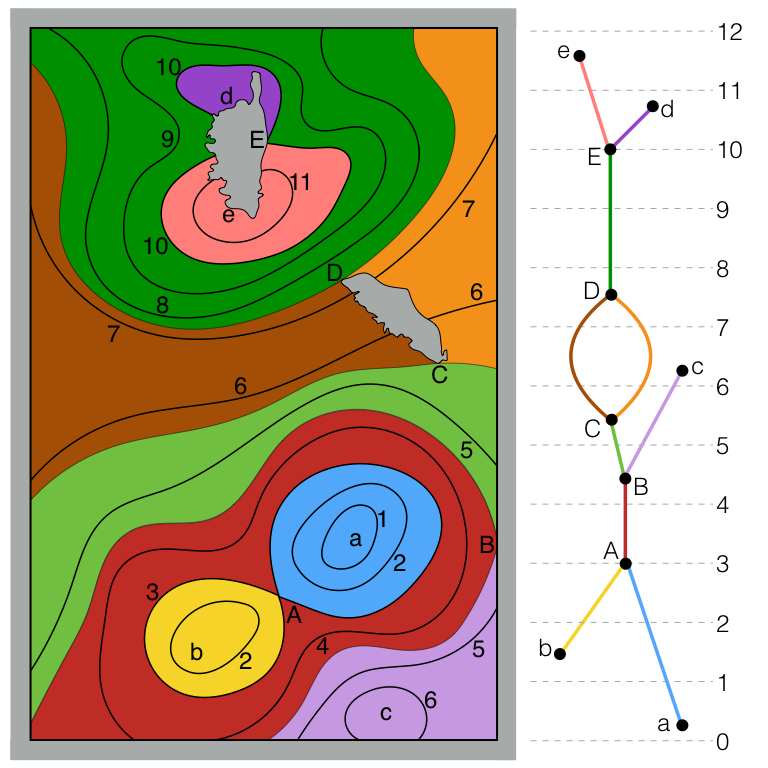

Neutral Surface Topology
|
Most oceanic flows are nearly confined to 2D surfaces, called neutral surfaces, in which no work is done against gravity. Unfortunately, non-linearity in the density of seawater (a function of heat, salt, and pressure) and subtle differences in how heat and salt are distributed prevents the existence of neutral surfaces as well-defined 2D surfaces. Instead, a water parcel moving neutrally---never feeling gravity---and mixing as it goes around the ocean may return to its starting point above or below where it began. Neutral surfaces possess spirals. Nonetheless, the vertical pitch of these spirals is small, so it is useful to build well-defined 2D surfaces that closely approximate neutral surfaces. These are often an iso-surface of a 3D variable, such as Neutral Density (Jackett and McDougall, 1997) or Orthobaric Density (de Szoeke et al., 2000). Topology gives us a far deeper understanding of neutral surfaces. The key is to study the connected components of level sets of pressure on a neutral surface. This entire structure is encoded in the Reeb graph (Reeb, 1946), illustrated at right. Nodes represent critical points of the pressure on the surface. An arc between two nodes represents a path on the surface that is monotonic in pressure and connects the two critical points, plus all pressure contours intersecting that path. I use ReCon to compute the Reeb graph on oceanic data (OCCA and ECCO2). Below (panel a), I show the in-situ density and pressure (heat and salt could equally well be shown) on an approximately neutral surface. The pressure is shown in (b), the Reeb graph in (c), and the regions corresponding to each arc in (d). The in-situ density is (very nearly) a multivalued function of pressure. The Reeb graph finds regions within which this becomes single-valued. I've invented new approximately neutral surfaces, called topobaric surfaces, that exploit this multivalued functional relationship. They possess the best theoretical properties of Orthobaric Density, while the geographic dependence (a feature shared with Neutral Density) enables them to be extremely close to neutral. As a corollary to this theory, the the exact geostrophic streamfunction for neutral surfaces is derived. McDougall (1989) proved this geostrophic streamfunction must exist, but its expression had remained elusive. Topobaric surfaces also (with a minor modification) possess an exact geostrophic streamfunction of the same form. Stanley, G.J., 2019a. Neutral surface topology. Ocean Modelling 138, 88–106.. |

|
Rossby shock waves in the Southern Ocean
Geophysical turbulence is rampant in the Antartic Circumpolar Current, which at any time is populated by hundreds of mesoscale eddies. Understanding this turbulence is crucial to understanding the large-scale climate of the Southern Ocean. Borrowing ideas from studies of Jupiter, Saturn, Mars, and Earth's atmosphere, this project estimates a "Mach number" for Rossby waves in the Southern Ocean. When this "Mach number" between 0 and 1, Rossby waves may travel upstream, and can coordinate to lock their phase with each other, amplifying one another and leading to turbulence. When this "Mach number" is negative (a possibility for uni-directional waves) or greater than 1, the Rossby waves travel downstream and are ripped apart from one another, unable to generate turbulence; these cases are the two branches of Arnol'd's stability theorems. With SOSE data, we calculated the inverse "Mach number" (1 / "Ma") on an orthobaric density surfaces, using a novel method to estimate the Rossby wave phase speed on such surfaces. An example is shown in the figure below. Note, 1 / "Ma" is less than 1 for the two stable cases. The Antarctic Circumpolar Current shows a rich structure near "Ma" = 1, suggestive of the onset of shear instability itself.
Work with Tim Dowling, Beth Bradley, and David Marshall: 2020, JPO .

Potential vorticity non-conservation in the Antarctic Circumpolar Current
Potential vorticity: a GFD'ers best friend. As a materially conserved quantity, PV is the cornerstone of many great theories of oceanic and atmospheric circulation, including some of the ACC. This project studies the climatological (from SOSE) potential vorticity along climatological streamlines in the ACC. We find a massive drop in PV downstream of Drake Passage, a smaller drop downstream of Campbell Plateau, and compensatory gains elsewhere. So, in the time-mean, PV is far from conserved in the eddy-rich ACC. Rather, eddy fluxes and mean advection modifies the PV, in largely but not perfectly compensatory ways. The subtle imbalance, together with more minor terms, creates the rich PV structure of the Southern Ocean. The figure below shows climatological Ekman pumping velocity (purple/orange) and streamlines coloured by the relative potential vorticity change along each streamline (blue/red).
Work with David Marshall: manuscript in preparation.
The edge of turbulence
|
Turbulent fluid flows are ubiquitous; the turbulence is sometimes useful, sometimes damaging, and usually mysterious. Viewing the Navier-Stokes equations as a dynamical system has led to considerable progress. Exact and unstable solutions to the 3D Navier-Stokes equations are being found. These solutions are equilibrium points and periodic orbits, from which emerge stable and unstable manifolds that intertwine and entagle phase space. Turbulence can be thought of as a walk between these unstable solutions. The "edge" of turbulence is that which is just beyond all those states of the fluid that eventually return to the basic laminar flow (i.e. the basin of attraction of the laminar fixed point). The "minimal seed" of turbulence is the fluid state on the edge with minimal energy. It is the easiest way to kick the laminar flow so that it becomes turbulent. This project uses non-linear optimization (Kerswell et al, 2014) to find the minimal seed in a 4D dynamical system that is an analogue to turbulence in plane flow. Previous results (Cossu 2005) found a "strong edge" minimal seed for flow that remains turbulent for all time. We discover a "weak edge" minimal seed (having less "energy") for flow that grows non-linearly, visits an unstable equilibrium, then eventually relaminarizes. We find this minimal seed scales roughly as the inverse of the Reynolds number. The figure shows (colour and vertical axis) the "energy" of the 4D system after a long simulation, initialized with the fourth variable ("W") fixed and with a fixed amount of energy (hence two dimensions remain, the horizontal axes). This particular initialization energy is well beyond the edge of turbulence. Work with Norm Lebovitz: manuscript in preparation. |
Abyssal overturning circulation
|
This project explored a new parameterization of diapycnal ("vertical") mixing related to parameterized mesoscale eddy activity in coarse-resolution ocean general circulation models. The most common eddy parameterization (Gent-McWilliams) allows a certain amount of energy to disappear. In reality, some of this energy probably cascades to the small-scale and supports diapycnal mixing, likely via internal lee waves generated by flow over topography. We implemented this in the UVic model (using MOM), and found drastic changes in the simulated abyssal meridional overturning circulation (MOC; shown at right for the the control case in latitude-density space). Previous theoretical and modelling studies predicted the abyssal MOC should weaken under stronger southern hemisphere westerly winds (which is expected under 21st century anthropogenic climate change). However, stronger westerlies increase eddy activity in the Southern Ocean, which, through this energy pathway, actually strengthens the abyssal MOC. This has significant implications for long-term climate feedbacks. Work with Oleg Saenko: 2014, JPO. |
References
Cossu, C. An optimality condition on the minimum energy threshold in subcritical instabilities. Comptes Rendus Mécanique 333, 331–336 (2005).
de Szoeke, R. A., Springer, S. R. & Oxilia, D. M. Orthobaric density: A thermodynamic variable for ocean circulation studies. Journal of physical oceanography 30, 2830–2852 (2000).
Jackett, D. R. & McDougall, T. J. A neutral density variable for the world’s oceans. Journal of Physical Oceanography 27, 237–263 (1997).
Kerswell, R. R., Pringle, C. C. T. & Willis, A. P. An optimization approach for analysing nonlinear stability with transition to turbulence in fluids as an exemplar. Reports on Progress in Physics 77, 085901 (2014).
McDougall, T. J. Streamfunctions for the lateral velocity vector in a compressible ocean. Journal of Marine Research 47, 267–284 (1989).
Reeb, G. Sur les points singuliers d’une forme de Pfaff completement intégrable ou d’une fonction numérique. CR Acad. Sci. Paris 222, 2 (1946).
Last updated May 2019